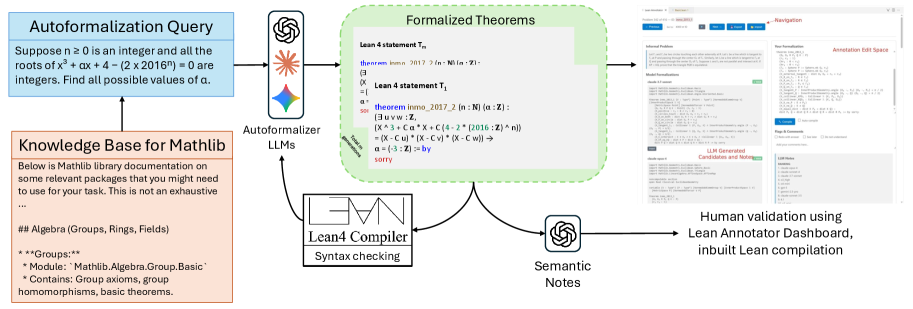

Introduces IndiMathBench, 312 human-verified Lean 4 theorems from Indian Math Olympiads, built via compiler-feedback autoformalization.
Abstract
Reliable autoformalization remains challenging even in the era of large language models (LLMs). The scarcity of high-quality training data is a major bottleneck. Expert annotation requires substantial time and deep expertise in both mathematics and theorem proving. We introduce IndiMathBench, a human-verified benchmark designed to evaluate mathematical theorem proving, curated using an AI-powered human-assisted pipeline for formalizing natural language problems in Lean. IndiMathBench is composed of 312 formal Lean 4 theorems paired with their corresponding informal problem statements, sourced from Indian Mathematics Olympiads. Through category-based retrieval, iterative compiler feedback, and multi-model ensembles, our pipeline generates candidate formalizations that experts efficiently validate via an interactive dashboard with automated quality summaries. Evaluation across multiple frontier models demonstrates that autoformalization remains challenging, with substantial gaps between syntactic validity and semantic correctness, while theorem proving success rates remain low even with iterative refinement, demonstrating that \benchmark presents a challenging testbed for mathematical reasoning. IndiMathBench is available at https://github.com/prmbiy/IndiMathBench.
Problem
Reliable autoformalization remains challenging due to scarcity of high-quality paired informal-formal training data. Expert annotation requires deep expertise in both mathematics and theorem proving, and existing benchmarks lack diversity in cultural scope and mathematical coverage.
Approach
IndiMathBench uses an AI-powered human-assisted pipeline: category-based retrieval, iterative compiler feedback, and multi-model ensembles generate candidate formalizations in Lean 4, which experts validate via an interactive dashboard with automated quality summaries. The benchmark draws from Indian Mathematics Olympiads (RMO and INMO) covering geometry, algebra, number theory, and combinatorics.

Figure 2: Overview of approach for creating IndicMath dataset: Human is assisted by a multiple LLM annotators. Each LLM generation is conditioned on the natural language and documentation, and goes through a validation check by Lean. Errors are provided as feedback in subsequent iterations. The final generations from all LLMs are summarized by an LLM in a dashboard to help optimize annotation effi
Results
The benchmark contains 312 formal Lean 4 theorems paired with informal statements. Evaluation shows substantial gaps between syntactic validity and semantic correctness across frontier models: Claude Opus 4 achieves 54 BEq-passing problems, compilation pass rates range from 38.5% (GPT-4.1) to 77.9% (Claude Opus 4) with documentation and feedback. Theorem proving success rates remain low even with iterative refinement.